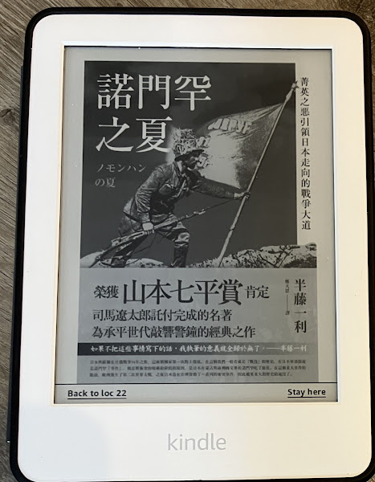

半藤一利-諾門罕之夏（Google圖書）

半藤一利-這位作者我以前沒有聽過，也不知道有這一本書的存在。不過在一次經過書友的介紹下，學會使用Google圖書買書，並且將Google圖書的書用Calibre解DRM。那一次為了試驗Google圖書解DRM，小弟正愁不知道買哪一本書，結果突然想到之前有email推播廣告給我，我就把信件打開，經過一陣挑選之後，就選擇了這一本諾門罕之夏。
這本書搜集了很多關於這場戰役的人物，也有搜集一些其他作者的書籍，或者是一些史料以及官方文件，就如同其他的戰爭書籍一樣。當然也免不了的，會針對這場戰役的戰況作最詳細的描述。在描述的同時，又會以加上自己對於當時這個人物的心情還有想法進行揣摩，另外還會加上對於當時時空環境以及氛圍的建構，使讀者可以讀到史料以外的東西（作者的想法）。
不過我覺得這本書最棒的部分，不是戰爭細節的描述，反而是當時外交的合縱連橫，真的是相當精彩。諾門罕事件會發生，當然與關東軍的失控有很大的關係，但是當時日本在滿洲成立滿洲國，而滿洲國很自然的會跟日本簽訂共同防禦協定，也就是滿洲國受到侵略，也就等於日本受到侵略，日本就有協防的義務。
然而外蒙常常鬧滿洲國的邊界，關東軍一直希望日本本土可以派更多的軍隊，可以好好的教訓外蒙，讓外蒙不敢入侵滿洲國。然而，外蒙有蘇聯的撐腰，加上日本除了滿洲國這個戰線之外，還有中國地區的戰線（有大量的軍隊被困在中國），不可能有關東軍希望的大量兵力。
日本也很希望藉由外交的方式，也就是與德國同盟，藉由德國牽制蘇聯西邊的戰線，讓蘇聯沒有多餘的兵力可以支援外蒙。但是與德國同盟會有一個問題，就是德國與英美是敵對狀態，如果跟德國同盟，是必有大概率會跟英美宣戰，所以就有一個問題，就是有必要為了滿洲國的邊境問題，得罪英國和美國嗎？即便當時在中國有發生日本與英國衝突的外交事件，日本基本上也是不希望跟英國交惡（宣戰）的。
然而人算不如天算，德國為了可以併吞波蘭，居然跟蘇聯簽訂友好條約。如此一來，不僅德國可以毫無後顧之憂的侵略波蘭，蘇聯也可以暫時不需要顧慮西部戰線，可以把更多更精良的兵力投入外蒙與滿洲國的戰鬥當中。因此，最終就是關東軍不僅兵力少妤對方，連軍備/設備/補給都遠遠遜於蘇聯和外蒙的聯軍，也因此造成關東軍慘烈的傷亡。
雖然關東軍的失控是戰敗的主要原因，不僅不理中央的指示，對於戰情還嚴重的判斷錯誤，但是根本原因還是在於兵力，武器還有補給也完全不足。另外，外交上的失利以及中國戰場的拖累，也是造成這場戰爭失敗的原因。
延伸閱讀:
天下雜誌出版-晶片戰爭(克里斯˙米勒)[Kindle]使用Calibre+DeDRM，幫你去除亞馬遜(Amazon)電子書的DRM
另外，美國購物代運可參考:
https://a1253247.blogspot.com/p/hopshopgo-vs-spexeshop.html
對板球有興趣的可參考:
https://a1253247.blogspot.com/2022/05/cricket-line-written-by-admin-24-10.html
對生活飲食有興趣，可參考: